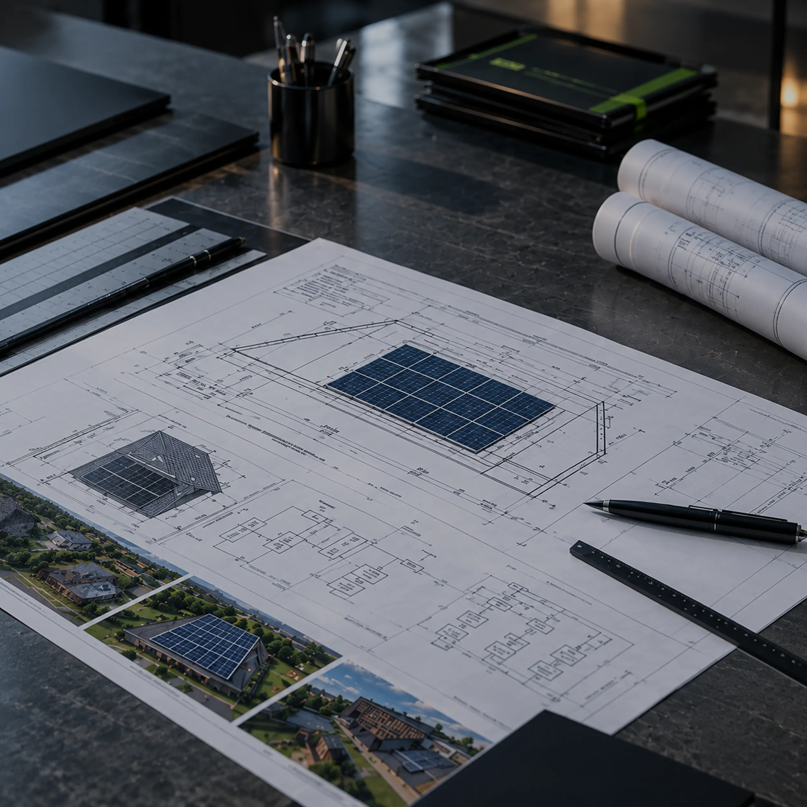
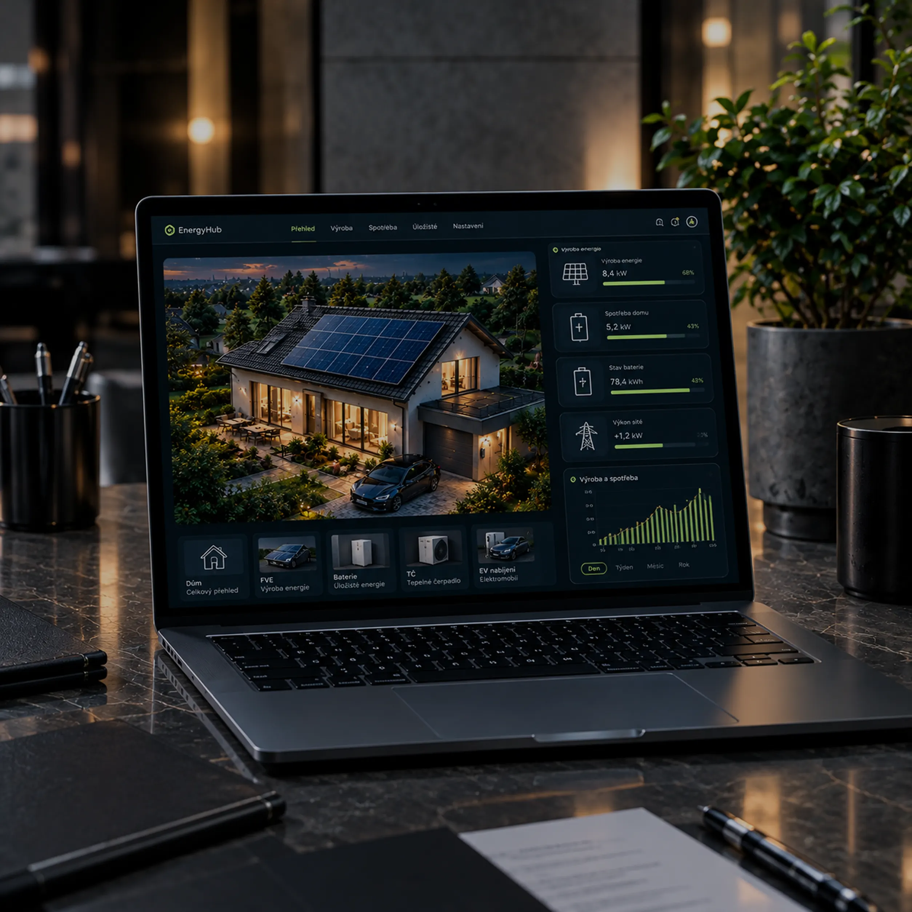

Co dokumentace obsahuje, kdy je povinná, kdo ji zpracovává a co zkontrolovat při převzetí instalace.
Projektová dokumentace je soubor výkresů, schémat a technické zprávy, který zachycuje, co přesně bylo na FVE instalováno, kde a jak.
Je to záznam toho, co se na domě instalovalo – a klíčový doklad, se kterým se dá pracovat při pojistné události, prodeji bytu nebo sporu s dodavatelem.
Dokumentace má dvě fáze. Projektová dokumentace vzniká před instalací a určuje, co a jak se postaví. Po dokončení se zachytí skutečný stav a doplní se revizní zprávy a technický list FVE.
Dokumentace navazuje na statický posudek (viz Statický posudek střechy) a požárně bezpečnostní řešení (viz Požárně bezpečnostní řešení), které jsou její součástí jako přílohy.
U FVE do 100 kW aktuální stavební zákon nevyžaduje stavební povolení ani žádnou formu hlášení stavebnímu úřadu – za předpokladu, že jde o součást jiné stavby, instalace nezasahuje do nosných konstrukcí, nemění způsob užívání stavby a nevyžaduje posouzení vlivů na životní prostředí. U kulturních památek platí zvláštní režim podle památkového zákona.

Před instalací
Po dokončení
Hlavním projektantem FVE je autorizovaná osoba v elektro oboru. K ní se přidružují statik a zpracovatel PBŘ, každý s vlastní autorizací. Nad 100 kW jde o zákonnou povinnost, u menších instalací ji předpokládají technické normy a doporučuje ji i Česká asociace pojišťoven.
Dokumentace vzniká souběžně s návrhem instalace, ne až po jejím dokončení – jinak hrozí, že bude popisovat něco jiného, než co bylo nakonec skutečně postaveno.

Doporučené doplnění (praktická doporučení, ne právní požadavky):
Informace vycházejí ze stavebního zákona č. 283/2021 Sb. ve znění novel účinných od 1. 8. 2025, vyhlášky č. 131/2024 Sb., zákona č. 360/1992 Sb., ČSN 33 2130, ČSN 33 2000-7-712, ČSN EN 62446-1, doporučení České asociace pojišťoven (2024) a příručky Solární asociace Protipožární bezpečnost u střešních solárních elektráren (2026).
Proč je to důležité
Bez dokumentace je při pojistné události, prodeji bytu nebo servisním zásahu obtížné prokázat, co, kdy a kdo instaloval. Kompletní dokumentace (návrh, statika, PBŘ, revize) navíc pomáhá při jednání s pojišťovnou, kterou Česká asociace pojišťoven doporučuje oslovit ještě před realizací většího projektu.
Nenašli jste odpověď na svou otázku na této stránce?
Zkuste vyhledat dané téma na webu.